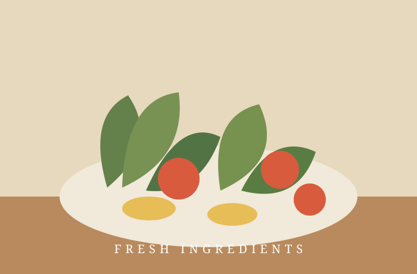
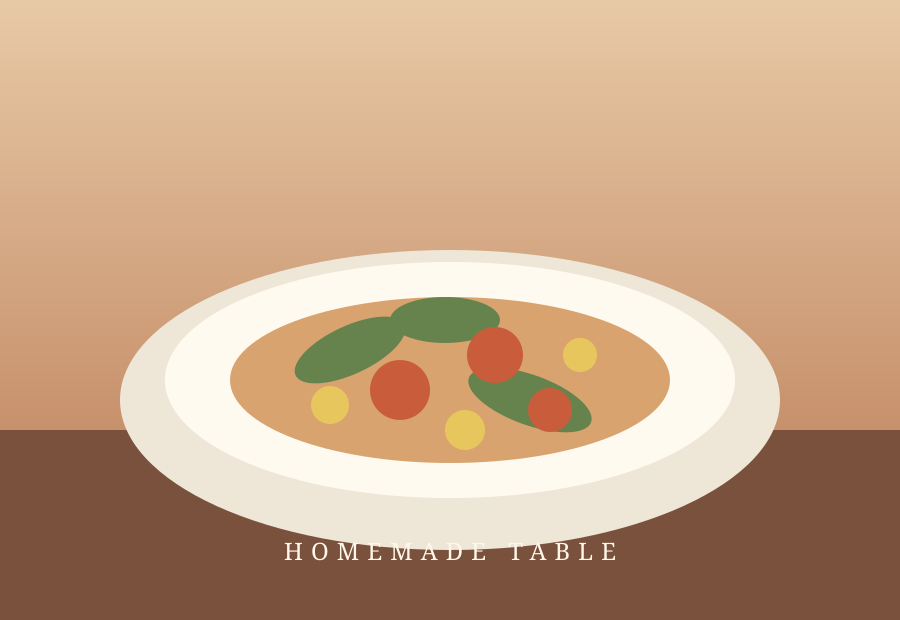

01 / INGREDIENTS
食材を選ぶ
季節の野菜や新鮮な食材を見つけるところから料理はスタート。色や香りを楽しみながら、今日のメニューを考えます。

GOOD FOOD, GOOD MOOD01 — ABOUT
私の好きなことのひとつは料理。献立を考えたり、旬の食材を選んだり、ひとつひとつの工程を楽しんでいます。思いどおりにできた日も、新しい味に挑戦する日も、キッチンに立つ時間はちょっと特別です。
“ COOK WITH LOVE. ”
いつもの食卓に、小さな幸せを。03 — KITCHEN MOMENTS